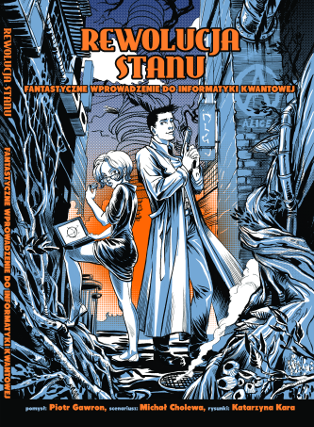

Piotr Gawron's profile
Research interest
Current:
Application of quantum computation and in particular quantum machine learning for efficient and accurate satellite images understanding for wide scale assessment of climate change impact.
Past but still on-going:
Quantum computation, quantum games, quantum programming languages, numerical ranges and shadows, tensor networks
Written together with Katrzyna Kara (illustrations) and Michał Cholewa (scenario)

Academic achievements
Received professional titles and academic degrees
- Doktor habilitowany of technical sciences (DSc equivalent) in the field of informatics,
granted on October 28th 2014, by the Council of Faculty of Automatic Control, Electronics and Computer Science, Silesian University of Technology,
on the basis of habilitation dissertation "Influence of the environment on quantum information processes".
- Doktor of technical sciences (PhD equivalent) in the field of informatics,
granted on December 23th 2008, by the Scientific Council of the Institute of Theoretical and Applied Informatics, Polish Academy of Sciences,
on the basis of a doctoral dissertation "High level programming in quantum computer science".
- Magister inżynier (MSc equivalent) of informatics, granted on September 24th 2003,
on the basis of a master thesis "Symulacja komputerów kwantowych" (eng. "Simulation of quantum computers"),
by the Silesian University of Technology, Faculty Of Automatic Control, Electronics and Computer Science, majoring in informatics, speciality: System Software.
Institute of Theoretical and Applied Informatics,
Polish Academy of Sciences
ul. Bałtycka 5, 44-100 Gliwice, Poland
- from October 01 2018—institute professor (pol. profesor instytutu). - from November 01 2014—associate professor (pol. profesor nadzwyczajny). - from January 01 2009—adjunct (pol. adiunkt). - from October 01 2003—research assistant (pol. asystent), - from October 15 2001—programming technician (pol. technik programista),
My profiles on various web-services
- arXiv
- DBLP Computer Science Bibliography
- ORCID
- Google Scholar
- ResearchID
- Scopus
- Github
- scirate
- OPI - Nauka Polska
- Polish Scientific Library
- infona
- Support System for Selection of Reviewers
- loop
PhD theses supervised:
- Łukasz Pawela "Open system in quantum informatics" (PhD received in 2017)
- Michał Romaszewski "New methods for hyperspectral image classification" (PhD received in 2019)
Erdös Number:
Trough Man Duen Choi and then Bruce Reznick my Erdös Number is 3.
List of my co-authors
- Man-Duen Choi,
- Benoît Collins,
- Krzysztof Domino,
- Charles F. Dunkl,
- Bartłomiej Gardas,
- Przemysław Głomb,
- John A. Holbrook,
- Jerzy Klamka,
- Dariusz Kurzyk,
- Alexander Litvak,
- Jarosław A. Miszczak,
- Sebastian Opozda,
- Łukasz Pawela,
- Zbigniew Puchała,
- Michał Romaszewski,
- Łukasz Skowronek,
- Jan Sładkowski,
- Ryszard Winiarczyk,
- Karol Życzkowski
Research projects
Leadership of research projetcs
- Semantic tensor networks for large data sets analysis (2014/15/B/ST6/05204, 2015—2019)
- Entanglement effects in quantum games (IP2011014071, 2012—2013)
- Modelling methods of information systems using quantum queue theory (N N516 481840, 2011—2014)
- Quantum games in open quantum systems (IP2010 009770, 2011—2012)
Leadership of outreach projects
- Developing, publishing and promoting a comic book combined with a handbook on quantum information theory (QI-COMIX) (98/UD/SKILLS/2015, 2015—2016)
Participation in research projects
- Methods of development, modelling and analysis of quantum internetworking protocols (2011/03/D/ST6/00413, 2012—2017)
- Application of quantum game theory in modelling of quantum information transmission (N N516 475440, 2011—2013)
- Controllability of quantum systems (N N514 513340 , 2011—2014)
- Applications of geometric methods to quantum control (IP 2010 0334 70, 2010—2011)
- Distributed numerical analysis environment for the quantum information theory (N N519 442339, 2010—2013)
- Quantum computer programming language based on density matrices (N N519 2973 33, 2007—2008)
- Environment to programming, simulation and analyzing of quantum algorithms (N519 012 31/1957, 2006—2009)
- Study of possibility based on the long term theoretical knowledge of the JPEG2000 algorithms and his implementation in the DSP TMS320C6414 and FPGA from Xilinx (2005—2007)
Published papers
Numerical range / numerical shadow
- Charles F. Dunkl, Piotr Gawron, Łukasz Pawela, Zbigniew Puchała, and Karol Życzkowski. 2015. ‘Real Numerical Shadow and Generalized B-Splines’. Linear Algebra and Its Applications 479: 12–51. https://doi.org/10.1016/j.laa.2015.03.029.
- Benoît Collins, Piotr Gawron, Alexander E. Litvak, and Karol Życzkowski. 2014. ‘Numerical Range for Random Matrices’. Journal of Mathematical Analysis and Applications 418 (1): 516–33. https://doi.org/10.1016/j.jmaa.2014.03.072.
- Zbigniew Puchała, Jaroslaw Adam Miszczak, Piotr Gawron, Charles F. Dunkl, John A. Holbrook, and Karol Życzkowski. 2012. ‘Restricted Numerical Shadow and Geometry of Quantum Entanglement’. Journal of Physics A: Mathematical and Theoretical 45 (41): 415309. https://doi.org/10.1088/1751-8113/45/41/415309.
- Zbigniew Puchala, Piotr Gawron, Jarosław Adam Miszczak, Łukasz Skowronek, Man-Duen Choi, and Karol Życzkowski. 2011. ‘Product Numerical Range in a Space with Tensor Product Structure’. Linear Algebra and Its Applications 434 (1): 327–42. https://doi.org/10.1016/j.laa.2010.08.026.
- Charles F. Dunkl, Piotr Gawron, John A. Holbrook, Jarosław Adam Miszczak, Zbigniew Puchala, and Karol Życzkowski. 2011. ‘Numerical Shadow and Geometry of Quantum States’. Journal of Physics A: Mathematical and Theoretical 44 (33): 335301. https://doi.org/10.1088/1751-8113/44/33/335301.
- Charles F. Dunkl, Piotr Gawron, John A. Holbrook, Zbigniew Puchała, and Karol Zyczkowski. 2011. ‘Numerical Shadows: Measures and Densities on the Numerical Range’. Linear Algebra and Its Applications 434. https://doi.org/10.1016/j.laa.2010.12.003.
- Piotr Gawron, Zbigniew Puchała, Jarosław Adam Miszczak, Łukasz Skowronek, and Karol Życzkowski. 2010. ‘Restricted Numerical Range: A Versatile Tool in the Theory of Quantum Information’. Journal of Mathematical Physics 51 (10): 102204. https://doi.org/10.1063/1.3496901.
Quantum games
- Piotr Gawron, and Łukasz Pawela. 2016. ‘Relativistic Quantum Pseudo-Telepathy’. Acta Physica Polonica B 47 (4): 1147. https://doi.org/10.5506/APhysPolB.47.1147.
- Piotr Gawron, Dariusz Kurzyk, and Łukasz Pawela. 2014. ‘Decoherence Effects in the Quantum Qubit Flip Game Using Markovian Approximation’. Quantum Information Processing 13 (3): 665–82. https://doi.org/10.1007/s11128-013-0681-y.
- Łukasz Pawela, Piotr Gawron, Zbigniew Puchała, and Jan Sładkowski. 2013. ‘Enhancing Pseudo-Telepathy in the Magic Square Game’. PLoS ONE 8 (6): e64694. https://doi.org/10.1371/journal.pone.0064694.
- Jarosław Adam Miszczak, Piotr Gawron, and Zbigniew Puchała. 2012. ‘Qubit Flip Game on a Heisenberg Spin Chain’. Quantum Information Processing 11 (6): 1571–83. https://doi.org/10.1007/s11128-011-0322-2.
- Piotr Gawron. 2010. ‘Noisy Quantum Monty Hall Game’. Fluctuation and Noise Letters 9 (1): 9–18. https://doi.org/10.1142/S0219477510000034.
- Piotr Gawron, Jarosław Adam Miszczak, and Jan Sładkowski. 2008. ‘Noise Effects in Quantum Magic Squares Game’. International Journal of Quantum Information 06 (Supp): 667. https://doi.org/10.1142/S0219749908003931.
- Piotr Gawron, and Jarosław Adam Miszczak. 2005. ‘Quantum Implementation of Parrondo’s Paradox’. Fluctuation and Noise Letters 5 (4): L471. https://doi.org/10.1142/S0219477505002902.
Quantum computation
- Piotr Gawron, Dariusz Kurzyk, and Zbigniew Puchała. 2013. ‘A Model for Quantum Queue’. International Journal of Quantum Information 11 (02): 1350023. https://doi.org/10.1142/S0219749913500238.
- Piotr Gawron, Jerzy Klamka, and Ryszard Winiarczyk. 2012. ‘Noise Effects in the Quantum Search Algorithm from the Viewpoint of Computational Complexity’. International Journal of Applied Mathematics and Computer Science 22 (2): 493–99. https://doi.org/10.2478/v10006-012-0037-2.
- Piotr Gawron, Jerzy Klamka, Jarosław Adam Miszczak, and Ryszard Winiarczyk. 2010. ‘Extending Scientific Computing System with Structural Quantum Programming Capabilities’. Bulletin of the Polish Academy of Sciences -- Technical Sciences 58 (1): 77–88. https://doi.org/10.2478/v10175-010-0008-4.
- Piotr Gawron, and Jarosław Adam Miszczak. 2005. ‘Numerical Simulations of Mixed State Quantum Computation’. International Journal of Quantum Information 3 (1): 195. https://doi.org/10.1142/S0219749905000748.
Statistics
- Krzysztof Domino, and Piotr Gawron. 2019. ‘An algorithm for arbitrary–order cumulant tensor calculation in a sliding window of data streams‘. International Journal of Applied Mathematics and Computer Science 29 (1): 195. http://dx.doi.org/10.2478/amcs-2019-0015.
- Krzysztof Domino, Piotr Gawron, and Łukasz Pawela. 2018. ‘Efficient Computation of Higher-Order Cumulant Tensors‘. SIAM Journal on Scientific Computing 40 (3): A1590–1610. https://doi.org/10.1137/17M1149365.
- Gawron Piotr, Pawela Łukasz, Zbigniew Puchała, Szklarski Jacek, Życzkowski Karol Wybory samorządowe 2014. 2015. ‘W poszukiwaniu anomalii statystycznych‘. Studia Wyborcze 19, 53-77 http://yadda.icm.edu.pl/yadda/element/bwmeta1.element.desklight-13fc68c9-1d83-4413-896f-6cb6ba5ecc85.
- Ryszard Winiarczyk, Piotr Gawron, Jarosław Adam Miszczak, Łukasz Pawela, and Zbigniew Puchała. 2013. ‘Analysis of Patent Activity in the Field of Quantum Information Processing’. International Journal of Quantum Information 11 (01): 1350007. https://doi.org/10.1142/S021974991350007X.